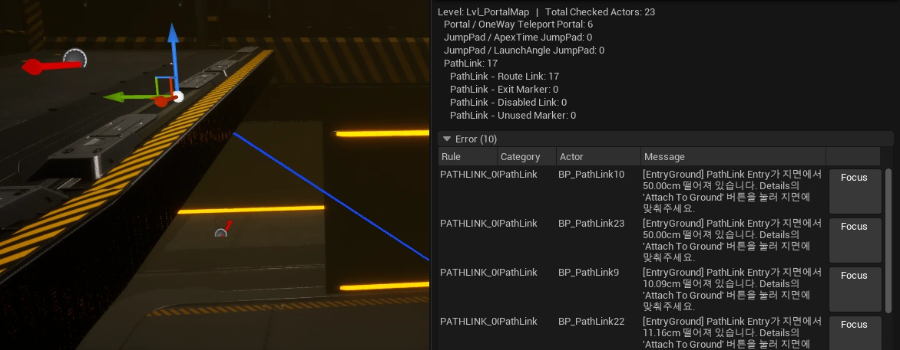
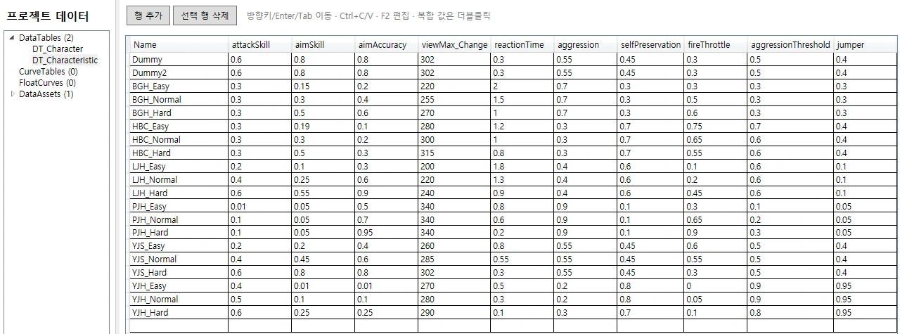
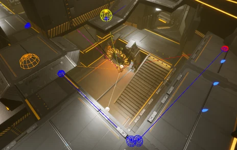
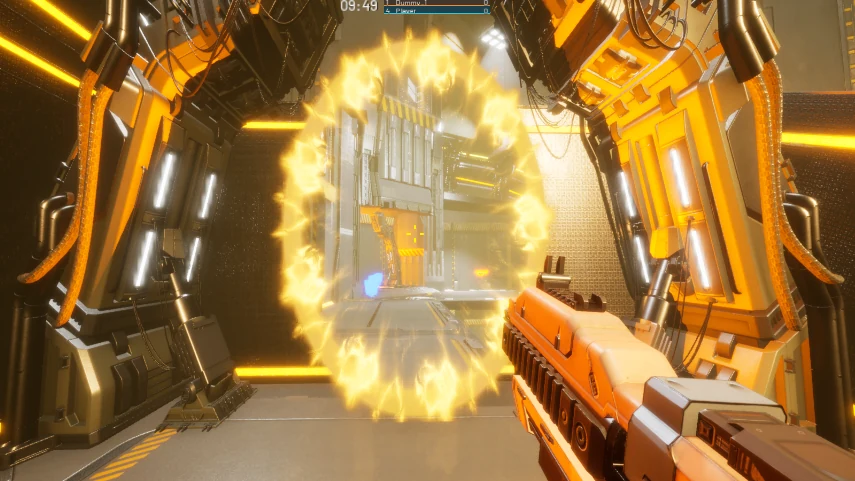

CASE 01 팀 제작 도구 / 레벨
레벨 오류를 찾고 수정할 위치로 이동
- 목표
- 포탈 출구 누락과 잘못 연결된 이동 경로를 플레이 전에 확인할 수 있게 했습니다.
- 바꾼 점
- 포탈, 점프패드, 이동 경로를 검사하고, 오류 목록의 Focus 버튼으로 대상 오브젝트를 선택해 에디터 시점을 이동합니다.
- 결과
- 캡처는 지면에서 50cm 떨어진 경로 입구를 검출한 예입니다.

PROJECT 04 팀 개발 / 담당 기능과 제작 도구
멀티플레이 FPS의 게임플레이와 팀 제작 도구
Unreal Engine 기반 3D 멀티플레이 슈팅 팀 프로젝트입니다. 제 담당은 레벨 배치 검증, JSON 편집 및 동기화 도구, 투사체와 포탈 및 전투 NPC 경로 탐색입니다.

ROLE CONTRIBUTION
레벨 배치 검증과 JSON 데이터 도구, 투사체 조준 및 충돌, 포탈 화면과 통과, 전투 NPC의 특수 이동 경로를 맡았습니다.
담당 기능 구현 과정에서 AI를 활용했습니다. 이 페이지에는 본인 담당 도구의 화면과 코드, 게임플레이 시연을 제시합니다.
CASES IMPLEMENTATION
CASE 01 팀 제작 도구 / 레벨

CASE 02 팀 제작 도구 / 데이터

CASE 03 전투 시스템
CASE 04 특수 이동

NOTES 기술 및 검증 자료
포탈 화면과 서버 통과 처리, 투사체, 1인칭 렌더링의 상세 구현과 Unreal Automation Test 코드는 기존 기술 자료에서 볼 수 있습니다.
입구 시점에 맞춰 출구 화면을 표시하고, 실제 통과 위치는 서버가 확정합니다.
투사체 합류와 충돌과 포탈의 변환, 투영, 통과 조건을 검사하는 코드를 작성했습니다.
